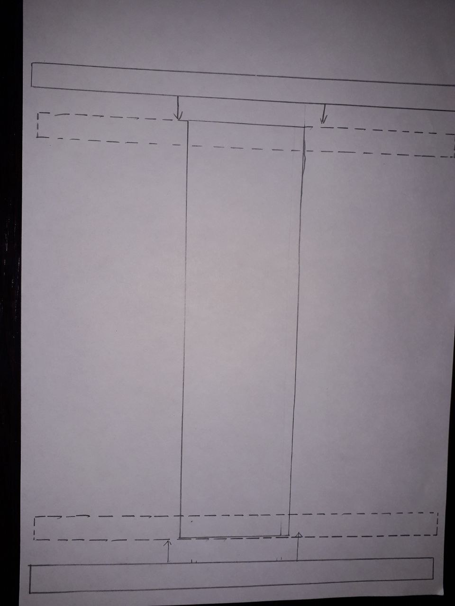

Информация про БПЛА
Лучшим решением нашей проблемы как мы посчитали было разработать свой БПЛА с простой сборкой и надежной конструкцией. Для этого нужно было собрать всю важную информацию. Вот что нам удалось найти и узнать:
История: Сегодня к БПЛА (Беспилотным летательным апаратам) причисляют все летательные апараты выполняющие полеты без экипажа на борту. В разговорной речи чаще используется ,,беспилотник,, и ,,дрон,,. Чисто теоретически первыми БПЛА были воздушные шары вооруженные бомбами которые австрийцы планировали использовать против итальянцев в Венеции в 1849 году. К сожалению эти БПЛА не были управляемыми и для самих австрийцев эта история закончилась плачевно. Через несколько лет в 1889 году знаменитый изобретатель Никола Тесла продемонстрировал миру радиоупровляемый кораблик. Конечно к самим БПЛА это не имеет прямого значения. Но это дало миру возможность развиваться в данном напровлении. И наровне со всем науками в мире строительство воздухоплавающих судов преобразилось.
Виды БПЛА:
1.Мультироторные - самые распростроненые виды БПЛА. Из себя они представляют летающую платформу с винтами от 3 до 12 штук. К примеру 4 винтовый мультироторный БПЛА - Квадракоптер.
2.БПЛА с неподвижным крылом - эти БПЛА полностью отличаются от предыдущего типа. И используют для взлета неподвижное крыло как самолеты. Такие ,,дроны,, не смогут зависнуть в воздухе борясь с гравитацией.
3.Однороторный дрон (беспилотный вертолет) - в отличии от мультироторных эти БПЛА имеют лишь один главный винт и один задний винт на хвосте для направления движения (как и у вертолетов).
4.Гибридные БПЛА - такие ,,беспилотники,, сочетают в себе преимущества БПЛА с неподвижным крылом и моделей с винтами. Успех они получили лишь с появлением современных датчиков.
Аналоги:
Самые качественные и долговечные БПЛА сейчас производят компании:
1.DJI
2.Parrot
3.Yuneec
4.Snaptain
5.Freefly
6.Holy Stone.
Причины падения БПЛА:
1.Ошибка дистанционного пилота.
2.Потеря связи.
3.Механическая неисправность.
4.Столкновение с птицей.
5.Нехватка энергии во время полета.
6.Погодные условия.
Для решения проблемы нужно было учесть все эти причины.
Комплектующие для сборки
1.Доска 5,5cм на 40cм.
2.Мотора от квадрокоптера
3.Плата со встроенным радиоприёмником или любая плата Arduino с отдельным радиоприёмником
4.Провода
5.Пульт управления
Инструкция по сборке БПЛА
1.Начертите размеры деталей(как указанно на изображении) на доске толщиной в 1 сантиметр.
2.Начните вырезать детали с помошью пилы, грайвера и т.п.
3.Подровняйте края дощечек с помошью напильника или наждачки.
4.Разогрейте клей-пистолет, а затем склейте детали как показанно на изображении.

5.Затем к концам балок приклейте моторы как показанно на изображении.
6.Прикрепите плату к дошечке как на изображении
7.Припаять провода к плате.
8.Подключите аккумулятор к плате и проверьте на работоспособность.
Разработчик Галкин Кирилл Владимирович 2023год